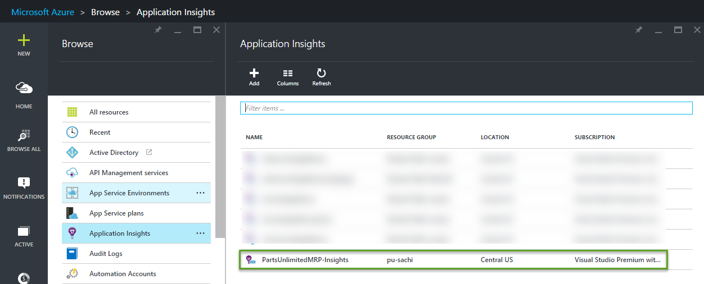

Application Performance Monitoring
Application Performance Monitoring using Microsoft Azure Application Insights
The DevOps team has noticed that the Dealers page is slow to load and shows performance spikes with database calls in the Application Insights telemetry. By viewing the details of performance monitoring through Application Insights, we will be able to drill down to the code that has affected the slow performance of the web application and fix the code.
In this lab, you will learn how to set up Application Insights telemetry, and drill down into performance monitoring data through Application Insights in the new Azure Portal.
Prerequisites
-
Code Editor (VSCode, Eclipse, etc.)
-
Continuous Integration build with Gradle to the PartsUnlimitedMRP virtual machine (see link)
-
Continuous Deployment with hosted agent (see link)
Tasks Overview
-
Set up Application Insights for PartsUnlimitedMRP
-
Using Application Performance Monitoring to resolve performance issues
Task 1: Create the Application Insights Resource on Azure
Step 1. In an Internet browser, navigate to http://portal.azure.com and sign in with your credentials.

Step 2. Click on the “+ New” tile on the left column, Search for “Application Insights,” and click on the first result “Application Insights (preview)”

Step 3. Fill the information asked, choose the Application Type for “Java web application”. We recommand to deploy this resource in the same Resource Group that you choose for the virtual machine in the previous HOL.

Task 2: Set up Application Insights for PartsUnlimitedMRP
Step 1. Still from the Azure Portal : http://portal.azure.com
Step 3. Open you Application Insights telemetry service previsously created for PartsUnlimitedMRP, select the Settings tile, followed by the Properties tile to find the Instrumentation key.

Step 4. Copy the Instrumentation Key in the Properties panel. You will need this when inserting the key into the ApplicationInsights.xml file in PartsUnlimitedMRP’s resources folder.

Step 5. Navigate to the working folders of the PartsUnlimitedMRP repo in a code editor (such as VSCode).

Step 6. In PartsUnlimitedMRP/src/Backend/OrderService/build.gradle, confirm that the build file is importing com.microsoft.appinsights.* and is also compiling com.microsoft.azure:applicationinsights-core:1.n.

Step 7. In PartsUnlimitedMRP/src/OrderService/src/main/resources/ApplicationInsights.xml, paste in the instrumentation key that you copied previously from the Azure Portal in between the <InstrumentationKey> tags.

Step 8. Additionally, verify that the following telemetry modules and telemetry initializers exist in between the <TelemetryModules> and <TelemetryIntializers> tags.
Telemetry Modules:
<Add type="com.microsoft.applicationinsights.web.extensibility.modules.WebRequestTrackingTelemetryModule"/>
<Add type="com.microsoft.applicationinsights.web.extensibility.modules.WebSessionTrackingTelemetryModule"/>
<Add type="com.microsoft.applicationinsights.web.extensibility.modules.WebUserTrackingTelemetryModule"/>
Telemetry Initializers:
<Add type="com.microsoft.applicationinsights.web.extensibility.initializers.WebOperationIdTelemetryInitializer"/>
<Add type="com.microsoft.applicationinsights.web.extensibility.initializers.WebOperationNameTelemetryInitializer"/>
<Add type="com.microsoft.applicationinsights.web.extensibility.initializers.WebSessionTelemetryInitializer"/>
<Add type="com.microsoft.applicationinsights.web.extensibility.initializers.WebUserTelemetryInitializer"/>
<Add type="com.microsoft.applicationinsights.web.extensibility.initializers.WebUserAgentTelemetryInitializer"/>

Step 9. Return to the Azure Portal and under the Application Insights telemetry for PartsUnlimitedMRP, click on the tile in the overview timeline for application health, “Learn how to collect browser page load data.” Once you click on it, a new panel should open that shows the end-user usage analytics code. Copy lines 8 through 17 (the script itself).

Step 10. Back in the code editor, we will want to insert the script code previously copied before the end of the <HEAD> tag for each of the HTML pages in PartsUnlimitedMRP, starting with the index page. In PartsUnlimitedMRP/src/Clients/Web/index.html, paste the script code before the other scripts inside of the <HEAD> tag.

Step 10. Repeat step 10 for the following HTML files:
PartsUnlimitedMRP/src/Clients/Web/pages/catalog/catalog.htmlPartsUnlimitedMRP/src/Clients/Web/pages/dealers/dealers.htmlPartsUnlimitedMRP/src/Clients/Web/pages/deliveries/deliveries.htmlPartsUnlimitedMRP/src/Clients/Web/pages/orders/orders.htmlPartsUnlimitedMRP/src/Clients/Web/pages/quotes/quotes.html
Step 11. Commit and push the changes to kick off the Continuous Integration build with Gradle.


Step 12. Return to the Azure Portal into the PartsUnlimitedMRP Application Insights telemetry to find data available for browser page loading and dependency durations. It may take a few moments for Application Insights to reload.

Task 3: Using Application Performance Monitoring to resolve performance issues
Step 1. In an Internet browser, navigate to the PartsUnlimitedMRP website that you previously deployed and go to the Dealers page. You’ll notice immediately that the page takes a while for the dealers to load on the left-hand side.

Step 2. Click on the “Browse All” tile on the left column, select “Application Insights,” and click on the name of your Application Insights telemetry for your web app.

Step 3. After selecting the Application Insights telemetry for your web app, scroll down and select the “Performance” tile to view performance monitoring information.

Step 4. In the performance tile of the Application Insights telemetry, note the timeline. The timeline data may not show up immediately, so you will want to wait for a few minutes for the telemetry to collect performance data.

Step 5. Once data shows in the timeline, view the operations listed under the Average of server response time by operation name section under the timeline. Click on the top operation in the list referring to the Dealers page to view details of that operation.
Step 6. Drill down into the method that is affecting the slow performance. We now know that the slow performance is being caused by the DealersController in our code and that this is causing inefficient database calls.
Step 7. Navigate to the working folders of the PartsUnlimitedMRP repo in a code editor (such as VSCode).
Step 8. Find the getDealers() method in PartsUnlimitedMRP/src/Backend/OrderService/src/main/java/smpl/ordering/controllers/DealerController.java that is causing slow performance.

Step 9. In the getDealers() method, notice that there is a database call 100000 times with the variable, numMongoDBCalls. Change the value of this variable to be 1 so that there is only one call to the database to populate the dealers list.

Step 10. Save the changes and commit the changes on the master branch. Push the changes to the remote repo in VSO to kick off a Continuous Integration build.

Step 11. Now that our changes have deployed to the website, open up a new incognito browser window (to prevent caching) and return to the Dealers page. The dealers will show up faster than they did previously now having one call to the database.
Step 12. Return to the Application Insights performance monitoring view in the Azure Preview Portal and refresh the page. The Average of server response time by operation name overview should not be showing the getDealers() method.
In this lab, you learned how to set up Application Insights telemetry, and drill down into performance monitoring data through Application Insights in the new Azure Portal.
Further Resources
Get started with Application Insights in a Java web project
Unix performance metrics in Application Insights
Application Insights API for custom events and metrics
Continuous Feedbacks
Issues / Questions about this HOL ??
Thanks